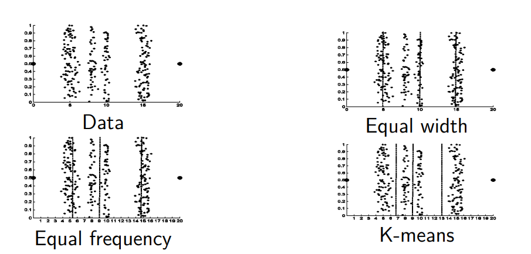

Type conversion
It is a Data pre-processing technique. Many algorithms like Perceptron require numerical data in order to work. -> categorical features must be converted in numerical and Ordinal data type must also preserve the order in the conversion
In other case like Classification the label must be discrete, and so we can discretize a numerical target.
We can also discretize numerical features by converting them in a series of boolena features.
Continuos to discrete conversion

- Equal width divides the data in equally spaced classes
- Equal frequency keeps the same amount of data in every class
- K divide data based on the mean